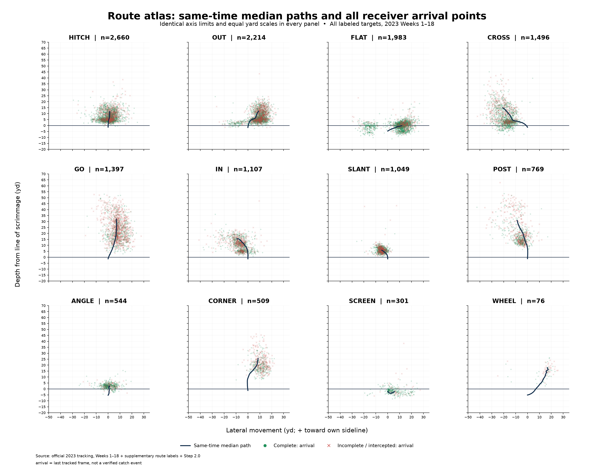

2023 Weeks 1–18 · 14,105 labeled targeted receiver routes · 12 route labels
Full English reading guide · Methods and rebuild instructions · All-route statistics · Selected plays
Start with the atlas, then compare each route distribution with its selected real-field play. Click any figure for its full-resolution PNG.
Arrival is the last tracked frame, not a verified catch event. Gold stars show ball landing, and the blue path changes from solid to dashed at the throw proxy.

Representative: Keenan Allen; game 2023102913, play 1975; result C. Selection distance 0.22 yd.
Representative: Allen Robinson; game 2023122300, play 601; result C. Selection distance 0.40 yd.
Representative: Noah Fant; game 2023111910, play 3177; result C. Selection distance 1.11 yd.
Representative: Donovan Peoples-Jones; game 2024010703, play 2460; result C. Selection distance 0.53 yd.
Representative: Courtland Sutton; game 2023102911, play 2321; result C. Selection distance 0.42 yd.
Representative: Justin Jefferson; game 2023091400, play 3836; result C. Selection distance 0.43 yd.
Representative: Van Jefferson; game 2024010700, play 2202; result C. Selection distance 0.22 yd.
Representative: Pat Freiermuth; game 2023112601, play 55; result C. Selection distance 0.37 yd.
Representative: Foster Moreau; game 2023101505, play 360; result C. Selection distance 1.17 yd.
Representative: Stone Smartt; game 2023111903, play 1152; result C. Selection distance 0.44 yd.
Representative: Jaxon Smith-Njigba; game 2023091012, play 3382; result C. Selection distance 0.37 yd.
Representative: Kadarius Toney; game 2023100113, play 1796; result C. Selection distance 0.66 yd.